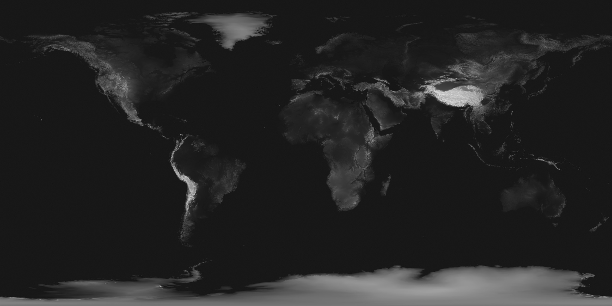
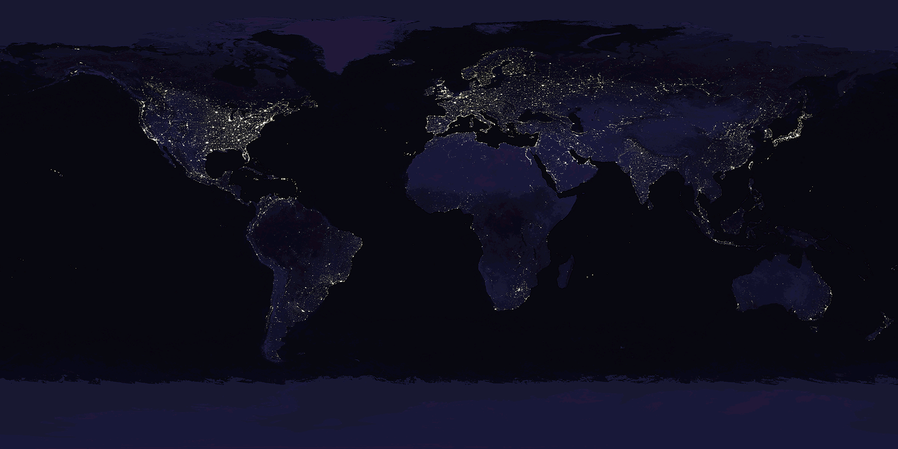

What js/earth.js hands js/globe.js, laid out at 1:1 instead of
wrapped round a sphere. baking…
The page only ever shows the disc pushed off the right edge of the viewport, so the shadowed crescent — the only place the city lights can appear — is usually off screen. This is the whole disc, at the camera the query string asks for.